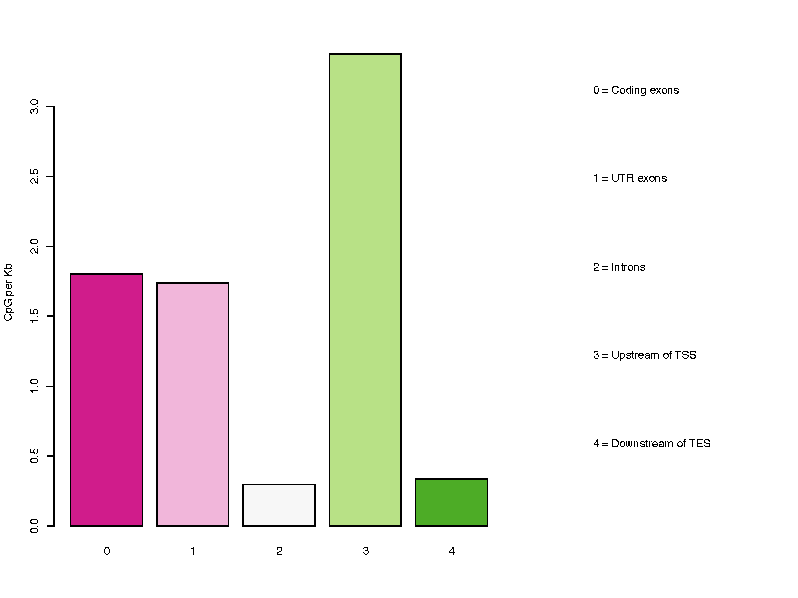

6. CpG_distrb_gene_centered
6.1. Overview
CpG_distrb_gene_centered summarizes CpG distribution across prioritized
gene-centered genomic annotations.
The genome is partitioned into five annotation classes:
coding exons
UTR exons
introns
upstream regions of transcription start sites (TSS)
downstream regions of transcription end sites (TES)
Because transcript annotations can overlap, the classes are made non-overlapping using the following priority:
Coding exons
UTR exons
Introns
Upstream of TSS
Downstream of TES
Higher-priority annotations override lower-priority annotations. For example, a region annotated as both exon and intron is counted as exon.
6.2. Input Files
6.2.1. CpG file
The CpG input must be BED3 or BED3+ and contain genomic CpG positions.
Example:
chr1 10847 10848
chr1 10849 10850
chr1 15864 15865
Compressed input is supported by the CpGtools reader.
6.2.2. Reference gene model
The reference gene model must be in BED12 format.
6.3. Usage
Basic usage:
CpG_distrb_gene_centered \
-i 850K_probe.hg19.bed3.gz \
-r hg19.RefSeq.union.bed.gz \
-o geneDist
Useful options include:
-u,--upstream– upstream region size relative to the TSS (default: 2000 bp)-d,--downstream– downstream region size relative to the TES (default: 2000 bp)--format {png,pdf,both}– plot output format (default:pdf)--dpi– PNG resolution (default: 300)--width– plot width in inches (default: 8)--height– plot height in inches (default: 6)--no_plot– write the summary table without generating a plot-o,--out_prefix,--output– output prefix
Display all options with:
CpG_distrb_gene_centered -h
6.4. Output
For output prefix geneDist, the command always writes:
geneDist.gene_centered_distribution.tsv– gene-centered CpG summary
The table contains:
Column |
Description |
|---|---|
|
Numeric priority of the annotation class. |
|
Annotation class. |
|
Number of non-overlapping intervals in the class. |
|
Total number of annotated bases. |
|
Number of CpGs overlapping the class. |
|
CpG density per kilobase. |
CpG density is calculated as:
Unless --no_plot is used, the command also writes one or more plots:
geneDist.gene_centered_distribution.pdfgeneDist.gene_centered_distribution.png
Use --format both to generate both plot formats.
6.5. Example Data
6.6. Example Figure
{kind=link}
